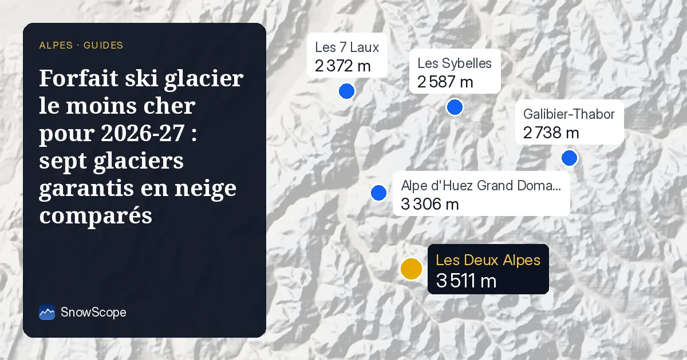
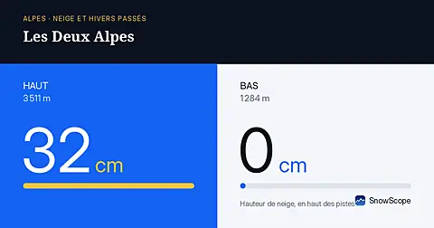

Forfait ski glacier le moins cher pour 2026-27 : sept glaciers garantis en neige comparés
En novembre et début décembre, un glacier reste la valeur la plus sûre pour son forfait de ski. Parmi les sept glaciers comparés, Les 2 Alpes et le Mölltaler Gletscher sont les moins chers à 68 et 69 EUR la journée adulte, et celui du Mölltal affiche aussi l'enneigement habituel le plus profond en décembre du groupe : 118 cm à mi-montagne.
Consultez les prévisions neige en temps réel pour Les Deux Alpes sur l'application SnowScopeHauteurs de neige, alertes poudreuse et carte 3D, gratuitement.
Sept glaciers, de 68 EUR à 86 CHF
Les 2 Alpes vendent leur forfait journée Grand Domaine à 68 EUR avec le billet flexible Freedom, et seulement 42 EUR lors du week-end d'ouverture, les 28 et 29 novembre 2026. Le Mölltaler Gletscher, en Carinthie, suit à 69 EUR en basse saison, même si ce tarif provient de sa dernière grille publiée, celle de 2025-26 : à vérifier avant de partir.
La Zugspitze, seul domaine skiable sur glacier d'Allemagne, coûte 70,5 EUR en ligne. Le Kitzsteinhorn, au-dessus de Kaprun, demande 74 EUR en début de saison et 82 EUR en pleine saison. Le Pitztal garde un seul tarif tout l'hiver, 77 EUR, tout comme Hintertux à 82 EUR. Saas-Fee, en Suisse, clôt le classement à 86 CHF.
Quels glaciers ont vraiment la neige
Tous les domaines sur glacier ne sont pas en altitude partout. Nous avons examiné la mi-montagne dans notre historique d'enneigement portant sur 46 hivers passés. Le Mölltaler Gletscher, à 2593 m, affiche en général 118 cm en décembre et 23 semaines par hiver avec au moins 50 cm, 9 hivers sur 10. Le Pitztal, à 2576 m, totalise 82 cm et 22 semaines de ce type. Saas-Fee compte 68 cm et 21 semaines, Les 2 Alpes 77 cm et 20 semaines.
Hintertux et la Zugspitze atteignent tous deux 15 semaines garanties en neige, avec 53 cm et 56 cm pour un mois de décembre habituel. Le Kitzsteinhorn est la surprise : sa mi-montagne se situe plus bas, à 1894 m, et ne garde que 41 cm en décembre avec 11 semaines garanties en neige. Le haut du glacier est fiable, mais la longue piste de retour vers Kaprun ne l'est souvent pas en début d'hiver.
Le meilleur rapport qualité-prix selon le séjour
Pour le prix le plus bas avec le plus de neige, le Mölltaler Gletscher l'emporte côté autrichien : 69 EUR et l'enneigement le plus profond des sept. C'est un domaine plus petit avec 21 km de pistes, donc un ou deux jours suffisent. Le Pitztal est le choix haute altitude pour les bons skieurs, avec des remontées jusqu'à 3424 m et le même prix chaque jour.
En France, Les 2 Alpes sont difficiles à battre fin novembre : 42 EUR le week-end d'ouverture, des remontées jusqu'à 3511 m et 108 km de pistes une fois tout le domaine ouvert. La Zugspitze a du sens depuis Munich pour une seule journée, et Saas-Fee est le choix idéal si l'on veut de la neige suisse et que l'on accepte de payer en francs.
Ski sur glacier en début d'hiver : à quoi s'attendre
En novembre, la plupart des glaciers n'ouvrent que quelques pistes au sommet, et on redescend généralement en remontée mécanique. La neige est souvent dure le matin et les journées sont courtes, mieux vaut donc partir tôt. Un vent fort peut fermer les remontées les plus hautes, et le froid à 3000 m est bien plus rude qu'en vallée.
Hors des pistes balisées, les glaciers cachent des crevasses sous la neige fraîche. Ne jamais quitter la piste sans guide et toujours consulter le bulletin d'avalanche de la région avant de partir.
Réserver le séjour avec le forfait
Un week-end de début de saison revient moins cher en dormant dans la vallée : Flattach au pied du Mölltaler Gletscher, les villages du Pitztal sous le glacier, ou la vallée de Tux. La carte de cet article montre des séjours à moins de 130 EUR la nuit près des quatre glaciers que nous recommandons, pour le week-end du 27 au 29 novembre 2026.
Les prix sur la carte varient selon les dates choisies, et les tarifs des forfaits peuvent évoluer en cours d'hiver. À acheter sur le site officiel de chaque glacier.
Conseils aux skieurs
- Le moins cher et le plus enneigé : Mölltaler Gletscher, 69 EUR et 118 cm en décembre habituel à 2593 m.
- Bon plan week-end d'ouverture : Les 2 Alpes à 42 EUR les 28 et 29 novembre 2026.
- Kitzsteinhorn : excellent en haut, moins garni en bas en début d'hiver.
- Ne jamais quitter les pistes balisées sur un glacier sans guide.
Autres cartes (sites externes)
Références et crédits
- Les 2 Alpes, official ski pass shop, prices 2026-27 www.skipass-2alpes.com/en/pricing
- Les 2 Alpes, official ski pass shop, opening weekend offer www.skipass-2alpes.com/fr/forfaits/ski
- Mölltaler Gletscher: official lift-pass prices (2025-26), checked 13 November 2026 www.moelltaler-gletscher.at/en/price-list/winter/moelltaler-gletscher
- Zugspitze: official lift-pass prices (2026-27), checked 13 November 2026 zugspitze.de/prices
- Kitzsteinhorn (Kaprun): official lift-pass prices (2026-27), checked 13 November 2026 www.kitzsteinhorn.at/en/tickets-prices/ski-board
- Pitztaler Gletscher: official lift-pass prices (2026-27), checked 13 November 2026 www.pitztaler-gletscher.at/media/pt_price_winter_26_27.pdf
- Hintertuxer Gletscher: official lift-pass prices (2026-27), checked 13 November 2026 www.hintertuxergletscher.at/en/tickets-rates/tickets-rates/rates-hintertux-glacier/
- Saas-Fee/Saastal, official ski pass prices 2026-27 www.saas-fee.ch/en/winter-in-the-saas-valley/ski-pass-prices/saas-fee
À propos de ces chiffres
Chiffres de neige : historique SnowScope, 46 hivers passés (1980-81 à 2025-26) à trois altitudes de la station, un modèle du passé corrigé de l'altitude (une estimation pour une zone, pas les bulletins de la station). Remontées, pistes et accès : les sources ci-dessous, vérifiées à la date indiquée.
Citer ce bulletin
Pour la recherche, l'enseignement ou la presse : chiffres et graphiques réutilisables librement sous CC BY 4.0 avec cette citation.
SnowScope (2026), Forfait ski glacier le moins cher pour 2026-27 : sept glaciers garantis en neige comparés, https://snowscope.app/blog/fr/2026/11/cheapest-glacier-ski-pass-2026-27-snow-sure.html, consulté le 2026-11-19
SnowScope (Atlas Labs). (2026, November 19). Forfait ski glacier le moins cher pour 2026-27 : sept glaciers garantis en neige comparés. SnowScope snow reports. https://snowscope.app/blog/fr/2026/11/cheapest-glacier-ski-pass-2026-27-snow-sure.html
BibTeX
@misc{snowscope2026cheapestglacierskipass20,
author = {{SnowScope (Atlas Labs)}},
title = {Forfait ski glacier le moins cher pour 2026-27 : sept glaciers garantis en neige comparés},
year = {2026},
month = nov,
howpublished = {\url{https://snowscope.app/blog/fr/2026/11/cheapest-glacier-ski-pass-2026-27-snow-sure.html}},
note = {Published 2026-11-19 14:07 UTC; accessed 2026-11-19}
}· CC BY 4.0 · Méthodes, données et outils →
Les Deux Alpes : neige et température selon l'altitude, cet hiver vs l'hiver dernier (outils) →
Suivre Les Deux Alpes
Gratuit : un message quand la neige arrive, et la météo chaque matin.
Autres bulletins neige

De 20 EUR pour un week-end d'ouverture à des forfaits de 6 jours avant Noël : un calendrier des meilleurs bons plans de début de saison dans les Alpes pour 2026, avec la neige à laquelle s'attendre.

Le 4 novembre, Les Deux Alpes compte 45 centimètres au sommet mais zéro en bas — un écart d'altitude extrême en début de saison.